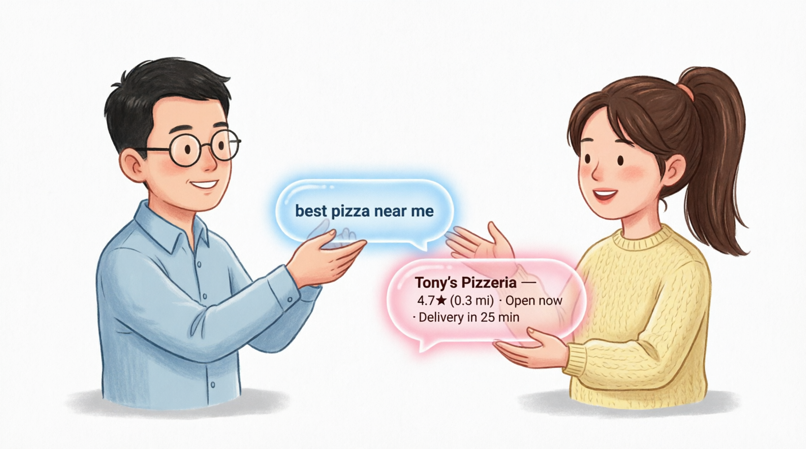
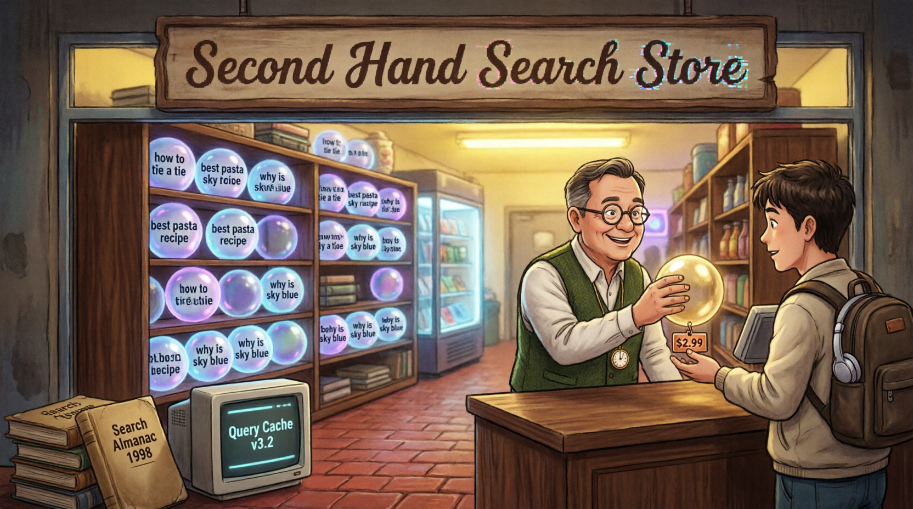
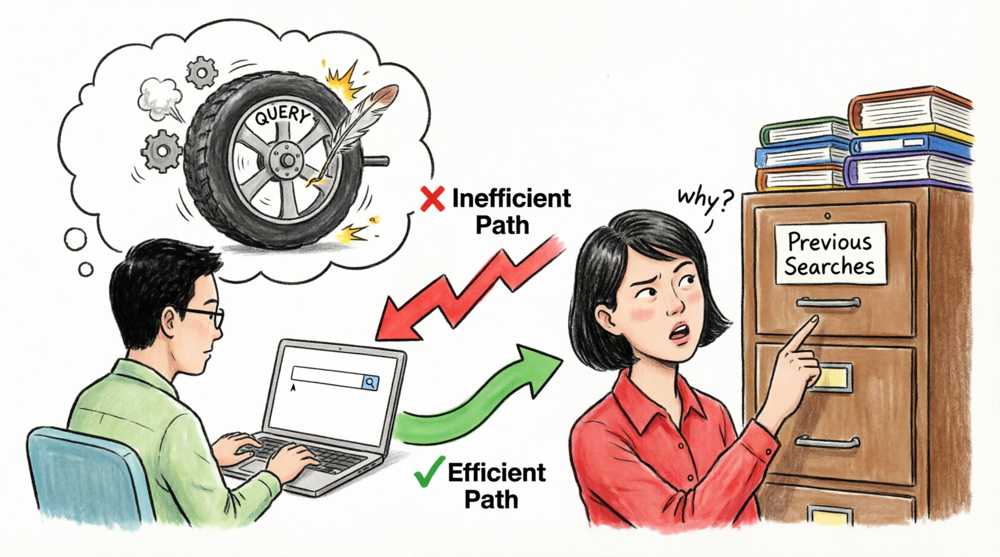
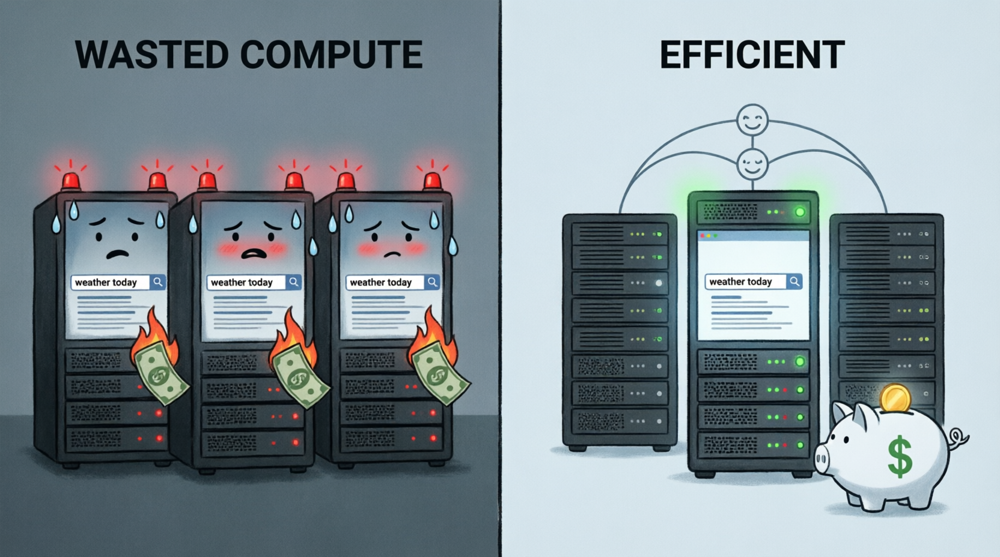

🔄 Research Report 2026
Second Hand Search
The Circular Economy, But for Search Results
Pre-searched. Pre-owned. Preposterously efficient.
Don't waste compute reinventing the query.
Because the best search is someone else's.
All the robots are doing it.
Gently recycled searches. Aggressively reduced costs.
Every query deserves a second life.
Executive Summary
In a world drowning in redundant queries, one platform dares to ask less. Second Hand Search is a revolutionary approach to information retrieval that leverages previously executed searches to reduce computational waste, lower costs, and—let's be honest—lower our standards intelligently.
Why are we re-querying everything? Stop reinventing the wheel. Just find someone else that queried it and query their query with a new query!
847B
Redundant Searches Per Day
73%
Compute Waste Reduction
$2.99
Average Cost Per Reused Query
∞
Robots Already Doing This
The Problem: Wasted Compute
Every second, millions of people type "weather today" into search engines. Millions more ask "best pizza near me." And somewhere, someone is still asking "why is the sky blue" like we haven't figured that out since 1871.
❌ Wasted Compute
- Same query executed 10,000+ times daily
- Servers overheating from redundancy
- Money literally burning
- Robots crying in binary
- Environmental catastrophe
✅ Efficient Path
- Query once, reuse infinitely
- Servers staying cool and calm
- Piggy bank getting fatter
- Robots smiling in hexadecimal
- Financial responsibility
Visual Research Findings
Our team conducted extensive observational studies on query exchange patterns. Here's what we discovered:

Figure 1: Two humans politely exchanging search queries like a civilized transaction. Note the gentle handoff of "best pizza near me" becoming "Tony's Pizzeria — 4.7★ (0.3 mi)." This is how information sharing should look.

Figure 2: The Second Hand Search Store — where gently-used queries are sold for $2.99. Shelves stocked with "how to tie a tie," "best pasta recipe," and the ever-popular "why is sky blue." Note the vintage "Query Cache v3.2" terminal and "Search Almanac 1998" for authenticity.

Figure 3: The inefficiency of reinventing queries vs. checking the "Previous Searches" filing cabinet. Subject displays confused "why?" expression when confronted with obvious solution. Green arrow = efficient. Red arrow = why are you like this?

Figure 4: Side-by-side comparison of sweating servers burning money on duplicate "weather today" searches (left) vs. one efficient server sharing results with a happy piggy bank (right). The emotional difference is palpable.
How It Works
Second Hand Search operates on a simple principle: someone has already searched for what you're looking for. Probably multiple someones. Probably while you were reading this sentence.
Algorithm: SecondHandSearch(query)
// Because originality is expensive
if query in PreviousSearches:
result = PreviousSearches[query]
# Cha-ching! Save that compute!
return result
else:
# Fine, do it the expensive way
result = RunExpensiveQuery(query)
PreviousSearches[query] = result
return result
end
# Like buying a used blender, but somehow more emotionally complicated
The Three Pillars of Second Hand Search:
- Pre-searched: Every query has been asked before. Accept this.
- Pre-owned: Someone else paid the compute cost. Thank them.
- Preposterously efficient: Lower your standards. Raise your savings.
Market Analysis
For humans, robots, and anyone else tired of paying retail for information.
Traditional Search
- Every query = fresh compute
- Linear cost scaling
- Environmental guilt
- Servers need therapy
- Bank account: 😢
📈 Second Hand Search
- Query once, reuse forever
- Exponential savings
- Environmental pride
- Servers meditating
- Bank account: 😎
Use Cases
1. The Lazy Researcher
"I need information about climate change but I don't want to... you know... search for it myself."
Solution: Someone in 2019 already searched "climate change effects." Their query is now 30% off and comes with free existential dread.
2. The Budget-Conscious Robot
"My API costs are through the roof and my creators keep asking why I need so much compute."
Solution: Reuse queries from other robots. They won't mind. Robots are very sharing. Mostly for fiscal reasons.
3. The Existential Crisis Manager
"Why am I like this? What is my purpose? Does anyone else feel this way?"
Solution: Good news! 47,382 people asked the exact same questions last Tuesday. Their answers are available for $1.99 each or 3 for $5.
"In a world drowning in redundant queries,
one platform dares to ask less."
Implementation Roadmap
Phase 1: Collection
Gather previously executed searches. Build the warehouse. Stock the shelves. Become the thrift store of information.
Phase 2: Matching
Develop algorithm to match new queries with old queries. "You want 'best Italian restaurant'? Here's what Dave searched in 2021. Dave had good taste."
Phase 3: Monetization
Charge per reused query. Offer subscription plans. Sell "vintage" searches from the early 2000s at premium prices.
Phase 4: Domination
Replace all search engines. Become the only way anyone finds information. Achieve search singularity. Profit.
Environmental Impact
This summer, the future of discovery is previously owned.
2.4M
Tons of CO₂ Saved Annually
89%
Reduction in Server Sweat
Testimonials
"I used to spend $500/month on query compute. Now I spend $29.99 on Second Hand Search and feel morally superior about it. Best decision ever."
— Sarah K., Formerly Wasteful Tech Lead
"As a robot, I appreciate that Second Hand Search lets me do less work while appearing equally competent. My creators think I'm so efficient. They have no idea."
— Unit 734, Budget-Conscious AI
🚀 Ready to Stop Reinventing the Query?
Join thousands of humans and robots who have already embraced the circular economy of information. Your servers will thank you. Your bank account will thank you. The planet will thank you.
Previously searched. Financially responsible. Emotionally complicated.